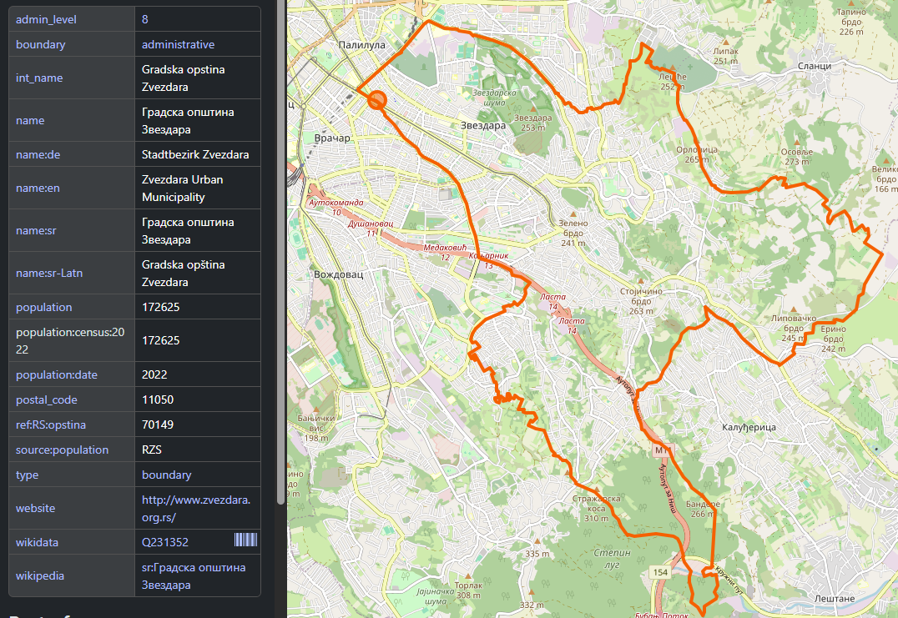
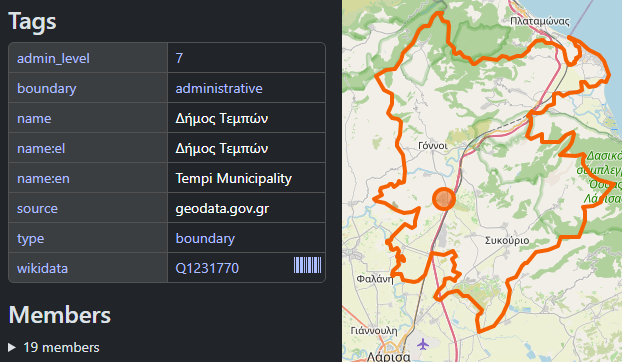

Kako je mapa bila potpuno u pravu,
a čovek i dalje nije našao svoju opštinu.
Letnja škola programiranja 2026
Senior Software Engineer
U podacima stvarno piše:
Градска општина Звездара
To je tačno. To je zvanično ime. I dalje niko ne može da nađe svoju opštinu.
Tačno nije
isto što i
korisno.
Nije slika. To je jako dugačak spisak stvari koje imaju ime, koordinate i tip.
Ovo već znate — to je običan rečnik.
# jedno mesto iz prave baze mesto = { "name": "Градска општина Звездара", "lat": 44.77154, "lon": 20.53136, "type": "admin", }
4.940
administrativnih jedinica — samo u Srbiji.
Ovde nisu ubrojana manja mesta, zgrade, reke, putevi, restorani… Pa puta ceo svet.
Nije Majkrosoft. Nije Gugl. Ovo je neko ručno nacrtao.
OpenStreetMap je Vikipedija za mape. Otvoriš, napraviš nalog, popraviš.
openstreetmap.org/relation/6930224

# skini ono što niko ne izgovara PREFIKSI = ["Градска општина", "Општина", "Град"] def skini_prefiks(ime): for p in PREFIKSI: if ime.startswith(p): return ime[len(p):].strip() return ime
Pet linija. Hajde da ih uključimo.
Ova sela stvarno postoje. Pravilo odozgo ih je upravo unakazilo.
Tražiš Moravica — reku po kojoj je okrug dobio ime.
U podacima: Моравички управни округ
Skineš „управни округ“, dobiješ Моравички.
Reč koja je ukucana ne postoji. Moraš da je izmisliš.
U podacima: Δήμος Τεμπών
Treba da piše: Τέμπη
Reč menja oblik, ne gubi samo prefiks.
Zvezdara, Zvezdare, Zvezdari, Zvezdarom. Vi ovo radite bez razmišljanja. Sečenje stringa ne zna gramatiku.

Poljska
U podacima: województwo łódzkie
Ljudi govore: Woj. Łódzkie
Tog niza slova nema nigde u podacima.
Ne možeš ga skinuti. Moraš da ga napraviš.
Slovenija
Piran / Pirano
Dva jezika, u istom polju, odvojena kosom crtom.
Izola / Isola. Portorož / Portorose. A na mađarskoj strani Lendava / Lendva.
Koje od ova dva ide na mapu?
Oba odgovora su tačna. Koji prikazuješ prvi?
Čestitam, upravo si dobio drugi posao: rangiranje.
Onih pet linija je, dok je stiglo do pravih korisnika, postalo mnogo, mnogo više.
Svako pravilo, za svaki jezik, za svaku zemlju, za svaki nivo. Jedno po jedno, kako je svako pucalo.
Tvoj posao nije da budeš u pravu.
Tvoj posao je da nekome dan prođe.